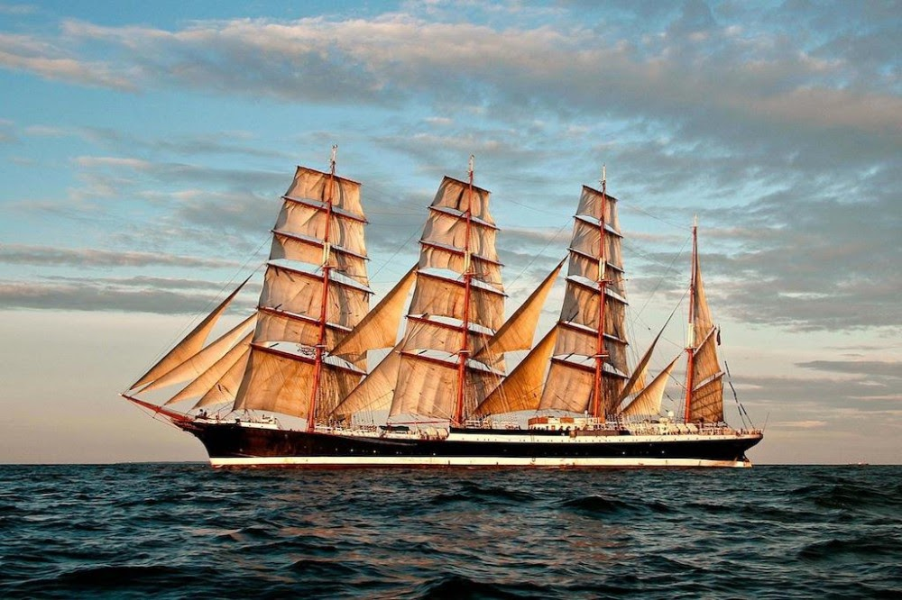

Барк «Седов»
Четырехмачтовый барк «Седов» — крупнейшее учебное судно не только в России, но и во всем мире. Построен он был в Германии в 1921 году, а в 1945 году после окончания Великой Отечественной войны передан Советскому Союзу. В 20‑е годы корабль считался четвертым по размерам парусным судном в мире и выполнял рейсы из Европы в Южную Америку и Австралию.
В 1991 и 1995 годах барк «Седов» выиграл знаменитейшую международную регату Cutty Sark, а в 2012–2013 годах совершил первое кругосветное плавание. Сейчас Седов приписан к Калининградскому техническому университету и до сих пор совершает учебные плавания. В одну из таких экспедиций под парусами вы можете отправиться вместе с нами.